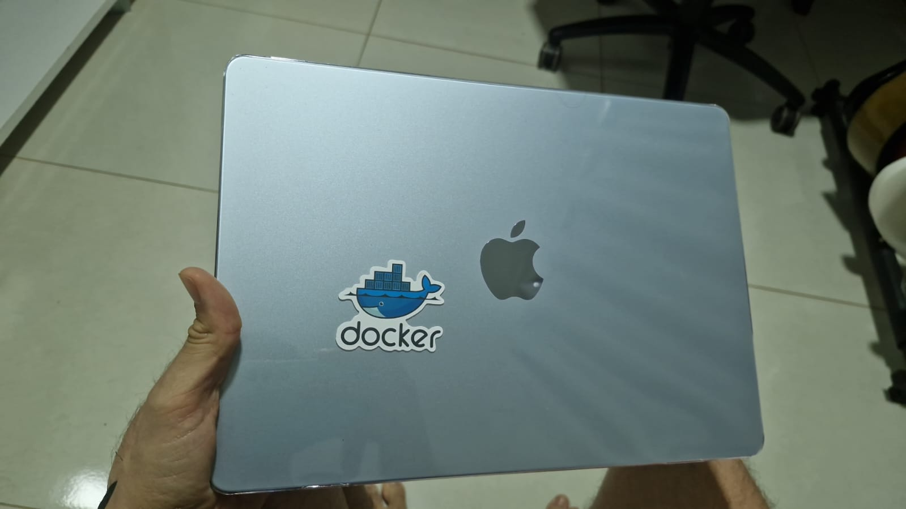
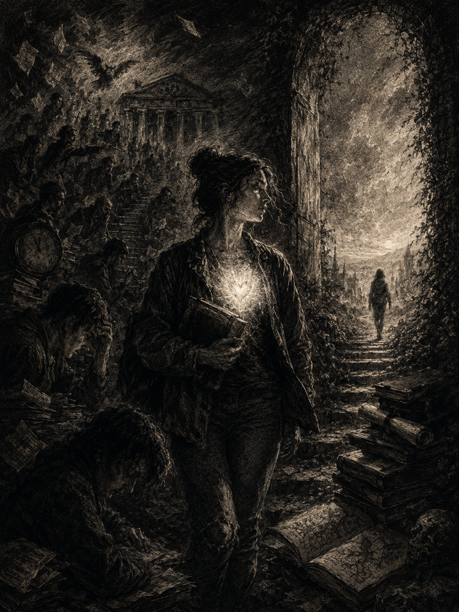

01 · Primeira Atividade
O objeto que me dá felicidade
A proposta era simples: trazer para a sala de aula um objeto que trouxesse muita felicidade. Eu escolhi o computador. Não foi uma escolha óbvia de tecnologia — foi uma escolha sobre o que ele representa: possibilidade.
Expliquei ao professor que o computador sempre foi meu parceiro nos melhores e piores momentos. Mais do que uma ferramenta, ele é o meio pelo qual eu me expresso: criar aplicações, desenvolver sites, estudar, produzir músicas, editar vídeos. Toda vez que abro uma tela em branco — seja um editor de código, uma DAW ou uma timeline de vídeo — estou diante da mesma sensação: de que qualquer coisa é possível.
O que mais me fascina no computador não é o hardware em si, mas o que ele viabiliza para as pessoas. A democratização da criação. Alguém sem recursos pode produzir música, aprender a programar, lançar um produto. Isso, pra mim, é o que faz um objeto ter valor real — não o preço, mas o que ele abre de portas.

02 · Segunda Atividade
O que me inspira à criatividade
Desta vez, o professor pediu que levássemos algo que inspire criatividade. Trouxe alguns desenhos que eu mesmo fiz em pixel art, usando minha mesa digitalizadora e o programa Aseprite. Parte dessas artes foi criada para trabalhos de faculdade relacionados ao desenvolvimento de jogos eletrônicos — uma das minhas paixões de sempre.
Videogame sempre fez parte da minha vida. Cresci sem condições de comprar os consoles de lançamento — precisava juntar dinheiro fazendo bicos ou trabalhando para os meus pais. Hoje tenho condições, mas não tenho mais a mesma disposição para jogar. Me divirto muito mais estudando os bastidores: como o jogo foi feito, quais técnicas foram usadas, que decisões de design guiaram cada mecânica.
Entre os projetos que quero retomar este ano está o userSabrina — um jogo educativo que ensina técnicas de levantamento de requisitos de Engenharia de Software. O personagem foi criado pelo meu colega Jonathan; o cenário eu mesmo desenhei. Os demais desenhos abaixo são conceitos, assets e estudos de pixel art.
03 · Terceira Atividade
Um poema sobre a universidade
A proposta era criar e recitar um poema sobre a universidade. A dinâmica imitava o The Voice Brasil — júri, apresentação oral, a obra inteira. O resultado geral foi irregular: a maioria não se dedicou muito, e a dicção deixou a desejar em quase todas as apresentações. Pra ser honesto, o meu poema não agradou o júri também.
Esforço, porém, é subjetivo. Sempre achei a arte de criar poemas muito tranquila — escrevi muitos durante o fundamental e o ensino médio. Agora, ser tranquilo não significa fazer bons poemas. Isso eu concordo. Mas o meu esforço não estava em escrever os versos em si: estava em encontrar fontes que fossem compatíveis com a minha visão de mundo e com o que eu penso sobre a faculdade. Então abri diversos poemas românticos, realistas e modernistas na tela e retextualizei tudo com as minhas palavras.
O resultado foi um poema que mistura três movimentos literários de propósito — cada um carregando uma camada diferente do que eu queria dizer sobre a experiência universitária.
Sobre a estrutura literária
O romantismo aparece na valorização da subjetividade, dos sonhos e dos sentimentos. O realismo, na crítica às cobranças sociais e à falsa aparência que a vida acadêmica pode exigir. O modernismo se manifesta na ausência de métrica rígida — o foco é o conteúdo, não a forma. A exceção é o último verso, que adota esquema ABAB. As três primeiras estrofes são mais otimistas; as três últimas, existencialistas: veem valor no fracasso como sinal de maturidade — algo que a sociedade perdeu com o tempo — e questionam: qual é o verdadeiro valor de uma vida, e por que buscamos conflitos sem sentido com os outros?
Poema · Terceira Atividade
Faculdade do Tentar

Estar na faculdade é sinônimo de transformação,
Lugar de discussão sobre um mundo em evolução,
Os alunos não devem tratá-la com obrigação,
Mas como palco principal para educação.
Estudante, a cada dia escreva sobre seus sonhos
Que podem florescer, leves, belos e risonhos
Para entrar na cena cultural
E finalmente, entender seu papel social
Faculdade, é algo facultativo
Estar nela, investir nela é optativo
O grande problema consta nas cobranças do mundo
Na tenra idade, a sociedade cobra um peso profundo
Você deve ter uma profissão
Transformando um sonho em futura frustração
Entretanto, viver não é somente cumprir uma expectativa,
Sequer carregar uma meta punitiva,
Podemos nos perder apenas por tentar corresponder,
Com uma sociedade que preza pelo falso ser.
O diploma tem seu valor, mas nada mede caráter
Não disciplina humildade
Nem mesmo representa a humanidade
Não define sozinho, a sua existência
Nem mesmo a sua real essência
Ser alguém no mundo vai além do simples produzir,
A vida é feita do cair, tentar e também, evoluir
Lembre-se do fracasso,
Porque é nele que vai construir seu próximo passo
No fim, o que são títulos e prestígios?
Se a grandeza está dentro do coração?
Por que buscais perante aos outros pífios litígios?
Se a vida termina em pó, silêncio e solidão?